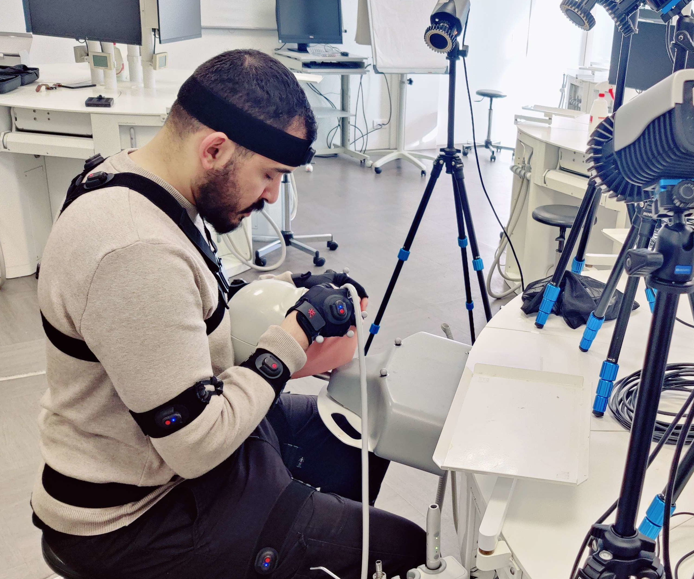
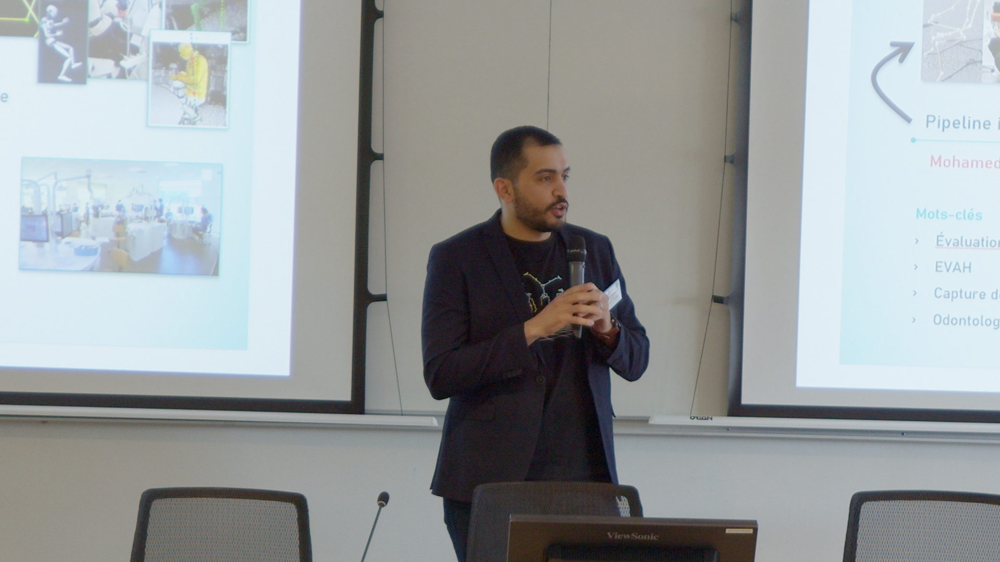
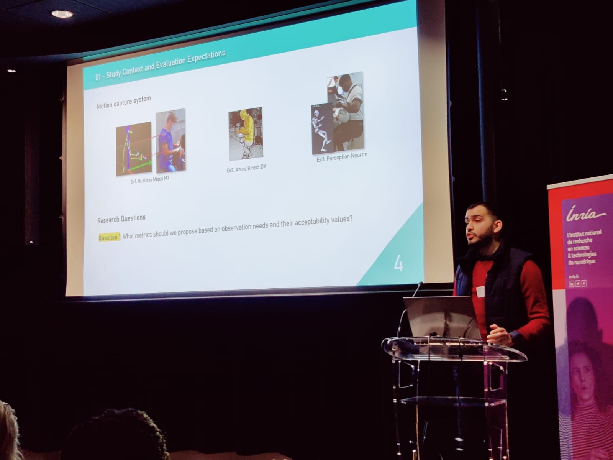
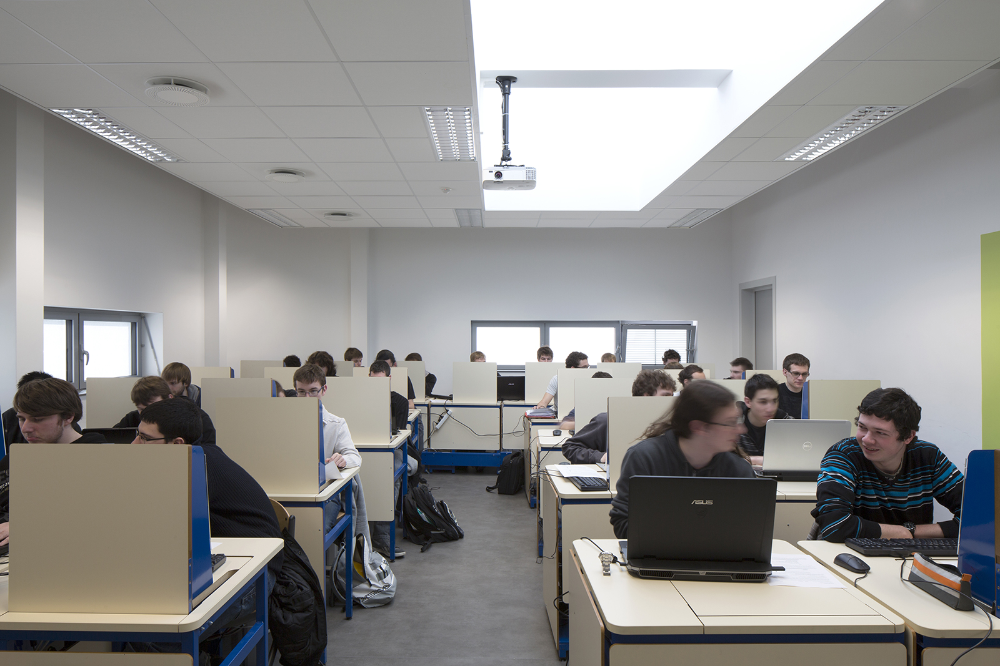

Mohamed Nail HEFIED
Doctorant en Informatique
Je conçois des outils interactifs qui analysent automatiquement les gestes pour accompagner l’apprentissage et aider à la décision.



01
Expertises
Cliquez sur un domaine pour afficher ses détails.
Interaction humain-machine
Le fil conducteur de mes travaux : comprendre l’activité humaine (ex. geste de chirurgie dentaire, intervention en environnement radioactif) pour concevoir des outils d’aide à l’apprentissage, à la décision et à l’action. Le mouvement est ma principale source d’information, mais je m’intéresse également à d’autres modalités pour assister l’humain.
Analyse du mouvement
L’analyse automatique du mouvement est un point fort de mon profil et la compétence principale développée durant mon doctorat. À partir des traces de mouvement, je conçois et intègre des outils d’analyse des gestes et des postures pour répondre aux besoins d’observation des experts.
En amont, j’ai développé une expertise de terrain en capture de mouvement avec différents systèmes : optique à marqueurs (ex. Qualisys), sans marqueurs (ex. Azure Kinect) et inertiel (ex. Perception Neuron).
Explorer la démarche VEEGO ↗Réalité étendue · XR
J’apprécie la réalité virtuelle et la réalité augmentée pour leur capacité à restituer les informations en 3D et à les situer dans l’environnement de l’utilisateur. Je travaille aussi sur des interfaces de bureau, mobiles ou web, selon les besoins et les usages.
Unreal Engine est un point fort de mes compétences en développement d’environnements XR. Je l’ai notamment utilisé pour mon dernier environnement virtuel, VEEGO, et je l’ai enseigné en BUT 3 Informatique.
Commande de systèmes
Mon master en automatique m’a permis de me former à la modélisation, l’analyse et la commande des systèmes physiques.
Cette compétence, associée à l’analyse du mouvement et aux environnements virtuels, nourrit mon intérêt pour les problématiques de collaboration humain-robot.
Développement fullstack
Le développement fullstack constitue mon socle informatique, construit tout au long de mon parcours pour répondre à mes projets professionnels comme personnels. Il me permet de relier interfaces utilisateur, logique applicative et gestion des données.
Intelligence artificielle
L’intelligence artificielle a fait partie de mon parcours de formation et je la mobilise dans mes projets, notamment pour l’analyse automatique du mouvement.
À titre personnel, je m’intéresse aux LLM, aux outils agentiques d’IA souveraine et à la gestion des connaissances autour du second cerveau.
Lire mon dernier article · VEEGO ↗Principes directeurs
Je m’intéresse à la recherche appliquée. Convaincu de l’existence d’un fossé entre la recherche académique et ses applications sur le terrain, je cherche à lever les verrous techniques et méthodologiques pour proposer des solutions concrètes, évolutives, à coût maîtrisé, non intrusives, faciles à déployer sur le terrain et appropriables par l’utilisateur final. La traçabilité de ma méthodologie de travail constitue également une préoccupation majeure.
02
Expériences

Octobre 2022 à août 2026
Recherche doctorale
Environnement virtuel pour la formation en odontologie.
En savoir plus
2022 — 2026
Enseignement supérieur en informatique
Cours, travaux dirigés et accompagnement en BUT informatique.
En savoir plus
2022
Réalité augmentée & sécurité
Réalité augmentée pour assister les interventions en environnement radioactif.
En savoir plus03
Formations
-
Licence
Génie industriel
20122015Université Abou Bekr BelkaidTlemcen, Algérie
- Productique
- Sciences de l’ingénieur
En spécialité productique, j’ai acquis des bases en informatique, électronique, mécanique et génie des procédés. J’ai étudié les systèmes industriels, des automatismes à la gestion informatisée de la production, des stocks et de la maintenance, dans une logique d’intégration (CIM), puis les chaînes logistiques et le pilotage stratégique à long terme.
Distinction académiqueECTS A -
Master
Automatique
20152017Université Ziane AchourDjelfa, Algérie
- Commande des systèmes
- Mathématiques appliquées
Durant ce master axé sur la théorie de contrôle, avec une composante en robotique et en informatique industrielle, j’ai étudié la modélisation, l’analyse et la commande (ex. PID, par retour d’état, optimale, prédictive, adaptative, floue et neuronale) des systèmes dynamiques dans les domaines temporel (via les représentations d’état) et fréquentiel (via les fonctions de transfert), avec des objectifs de stabilité, de précision et de rapidité. Les systèmes considérés peuvent être linéaires ou non linéaires, à temps continu ou discret, déterministes ou stochastiques, ou encore à événements discrets.
Excellence académiqueMajor de promotion -
Master
Ingénierie systèmes humain-machine
20202022Université de LorraineMetz, France
- Systèmes humain-machine
- Informatique
Ce master a marqué un tournant dans mon parcours, en intégrant une dimension anthropocentrée à ma formation jusqu’alors technocentrée, notamment à travers la modélisation des systèmes humain-machine et l’ergonomie. Sa forte composante informatique m’a formé à la conception et au prototypage d’interfaces, ainsi qu’à l’intégration de technologies XR dans la boucle d’interaction. J’ai également étudié des approches guidées par les données (data driven), associant intelligence artificielle et traitement d’images pour exploiter des données issues de l’humain (signaux physiologiques, mouvements, etc.), afin de mieux comprendre l’utilisateur et d’adapter l’interaction humain-machine à son état et à son activité. Une composante matérielle complétait ce parcours, notamment en instrumentation multicapteur, en traitement des signaux, ainsi qu’en robotique d’assistance.
Classement de promotion3ᵉ / 164 -
Doctorat
Informatique
2022Depuis octobreLe Mans Université · LIUMLaval, France
- Analyse du mouvement
- Environnement virtuel d’apprentissage humain (EVAH)
- Intelligence artificielle
Sujet de thèse : « Analyse et évaluation automatique du geste de chirurgie dentaire en environnement virtuel de formation ».
Direction : Dr Ludovic Hamon ↗ & Pr Sébastien George ↗.
Ce doctorat m’a permis de spécialiser mon profil dans les environnements virtuels d’apprentissage humain (EVAH) fondés sur l’analyse du mouvement, pour accompagner l’apprentissage du geste technique. J’y ai développé mes compétences sous trois casquettes : (i) celle de chercheur, avec la veille scientifique, l’identification de problématiques de recherche, la conduite d’expérimentations, l’analyse des données et la valorisation des résultats par des publications et des communications ; (ii) celle d’enseignant, avec des formations à la pédagogie universitaire, la préparation de cours et d’évaluations, et l’encadrement d’étudiants ; (iii) celle de collaborateur R&D, avec des compétences projet acquises au contact de partenaires académiques et industriels : participation aux lots de travail (work packages), contribution aux livrables, réunions de coordination et démonstrations.
-
Aujourd’hui
En fin de thèse
Maintenant.LIUM · Le Mans UniversitéLaval, France
Finalisation du manuscrit et préparation de la soutenance.
Soutenance prévue début 2027
04
Publications
5 publications affichées.
- 2026
Virtual Environment for the Evaluation of Gestures in Odontology
M. N. Hefied, L. Hamon, S. George · CSEDU, 18ᵉ édition, vol. 2, p. 1388–1400.
- 2024
A Pipeline for the Automatic Evaluation of Dental Surgery Gestures in Preclinical Training from Captured Motions
M. N. Hefied, L. Hamon, S. George, V. Loison, F. Pirolli, S. Lopez, R. Crétin-Pirolli · CSEDU, p. 420–427.
- 2024
Pipeline initial pour l’évaluation automatique du geste en odontologie
M. N. Hefied · Rencontres jeunes chercheuses et chercheurs en EIAH, p. 218–222.
- 2023
Projet de recherche EVAGO — Un travail pluri et transdisciplinaire présenté par ses doctorants
V. Loison, O. N. Bandiaky, V. Agueda, M. N. Hefied · AUPTIC éducation, 7ᵉ colloque international.
- 2017
On robust suppressing of nonlinear phenomena in DC/DC converter: comparative study
M. N. Hefied, K. Guesmi, Z. Madni · International Conference on Automatic Control, Telecommunications and Signals (ICATS).